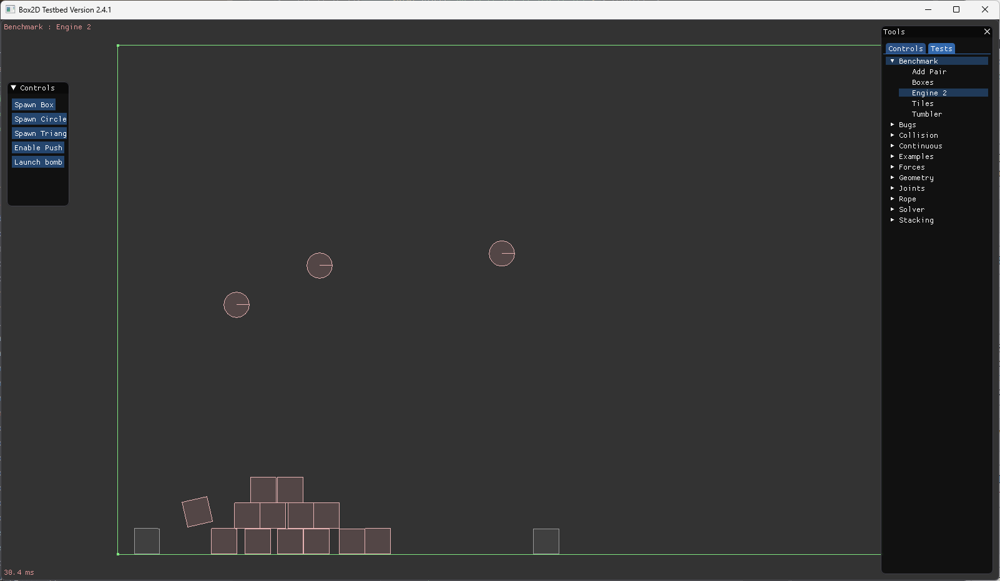

|
|

|
ABSTRACT
This website concerns a final project made for UC Berkeley’s Computer Science 184: Computer Graphics and Imaging class for undergraduate students. Our project is a 2D physics engine open-ended for changes and future improvements. This project was made by Aaron Xu, Henry Khaung, Abrar Karim, and Wil Rothman. The public GitHub repository can be found here.
KEYWORDS
Border, Collision, Engine, Objects/Primitives/Shapes, Rigid Body Physics, Simulation, Soft Body Physics
1 INTRODUCTION
So far, we have accomplished much in our project. To start off, after checking out a few options for physics frameworks to base our engine off of, we have decided to use Erin Catto’s Box2D due to its simplicity and ease of access. Box2D contains all of the necessary components to simulate comprehensive physics simulations, and is perfect for our project. After deciding the framework to use, we all downloaded and studied the source code and documentation for Box2D. In doing so, we realized that we could easily create tests and implement our project within the built in testing environment for Box2D, which can simulate an environment with Box2D’s physics simulation engine. Starting from there, we created a new test called Engine2 to begin implementing our project.
2 WORLD
In order to contain primitives (also known as “shapes” or “objects”) in our simulation, we created a rectangular border that is not affected by gravity or any other properties of physics. This rectangle will be our “world” in which we spawn primitives and have them interact with each other. In the future, we may try to add new worlds with different shapes and environments.
3 PRIMITIVE GENERATION
The Box2D starter code was very basic and did not include support for spawning multiple primitives at once, and only allowed the user to spawn small circles on the interface. This simulation was too simplistic for our project, so we decided to add support for multiple primitives, including circles and squares. To do this, we implemented a feature where users can spawn a selected primitive at the position of their mouse cursor using shift click. We also added support for dragging primitives around as opposed to simply spawning them. In the future, we plan to implement a feature that allows users to select an already spawned or yet to be spawned primitive and change its material properties. Currently, spawned primitives have predetermined properties, such as size and mass.
4 FORCES
Currently there are only two forces acting upon the primitives: gravity and user defined force (which can be applied through clicking and then dragging). Users can interact with primitives by clicking on a primitive to lift, push, and pull. We plan to add a feature that changes the mouse cursor to exert a constant pushing force around it, as well as other forces that can be exhibited by the mouse, such as creating a pendulum-like effect with the mouse when holding primities, or maybe sucking in nearby primitives.
5 COLLISIONS
Box2D’s source code comes with collisions implemented already so we did not have to implement this. However, collisions currently only act as rigid bodies, but we want to add soft body physics. Currently, primitives only collide with each other by pushing themselves away so that two primitives can never be overlapping. This is known as rigid body physics. We want to implement soft body physics with spring body masses which can exhibit a variety of material properties, such as hardness, strength, and elasticity, which would ultimately allow primities to interact in fundamentally different ways with themselves and the environment.
6 CONCLUSION AND FUTURE WORK
In conclusion, we have made good progress on our project towards our goal of creating a realistic and interactive 2d physics sandbox engine, having implemented very basic functionality of spawning objects and moving them around. Moving forward, we plan to implement custom materials and objects using spring bodies, and also continue adding more features to our simulation.
ACKNOWLEDGEMENTS
This document has been fitted to ACM SIGGRAPH style, as specified here. This website features a two-column PDF view, consistent with the guidelines.